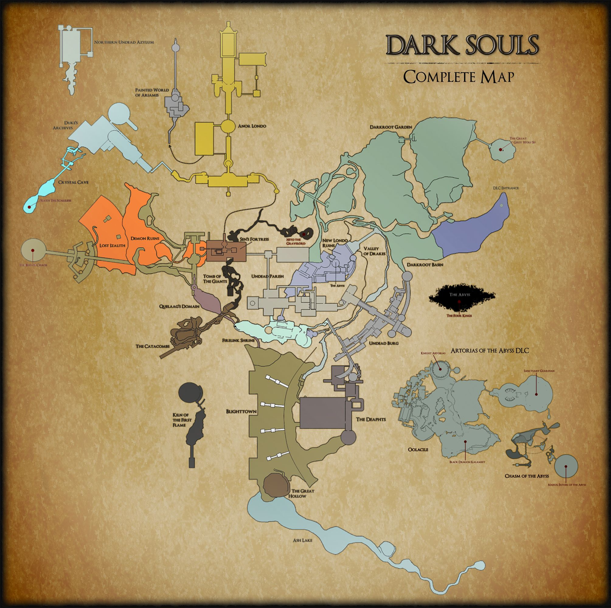

How To Play Dark Souls
Character customization
At the start of every Dark Souls game, the player gets to make their own character. There are the basics like gender, name, facial features, body features, and more. Then the player gets to class. Class is profession the character had in his/hers pass life. For example, some classes are knight, warrior, thief, bandit, mercenary, hunter, wanderer, explorer, assassin, herald, pyromancer (controller of fire or pyromancies), cleric (controller of miracles), sorcerer (controller of sorceries), and deprived. Then there the gifts, which gives the player a little head start or cheat in the game. Some gifts the player can get is black firebombs, master key, healing wares and more.
Maps
There are many maps in Dark Souls. Many of these maps are designed to trick the player to falling off cliffs or just trappin them with booby traps. For example, sinner’s rise, undead burge, anor londo, hunter’s copse, and more. Other maps are very easy to navigate but have some of the toughest enemies in the game. There are so much to explore in the world of Dark Souls!
Bosses
One off the things that made Dark Souls so popular was the bosses. Many of the bosses were difficult and made players want to quit the game. There are many bosses in the game, some are just bosses the player has to get passed to continue the storyline. For example, asylum demon, Taurus demon, Capra demon, gaping dragon, the last giant, the pursuer, the ancient sentinels, champion gundyr, and more.
Some are bosses the player has to beat in the main game like lord gwyn, bed of chaos, old iron king, Neto, and more. Others are just optional bosses the player can fight to challenge their skills like the king’s pets, blue smelter demon, and more.
